第2章 · 原课件与完整中文翻译
上方为英文原页，下方为对应的完整中文翻译，标题、正文、图内文字和公式按原页顺序排列。
页号按PDF顺序。原课件的历史日期、学期、课堂安排和研究结论按原文保留；相关概念与适用条件见教程正文。符号、代码、作者姓名及便于检索的专有名称保留原文。
Lecture 02 · 73页
Lecture 02 · PDF p1
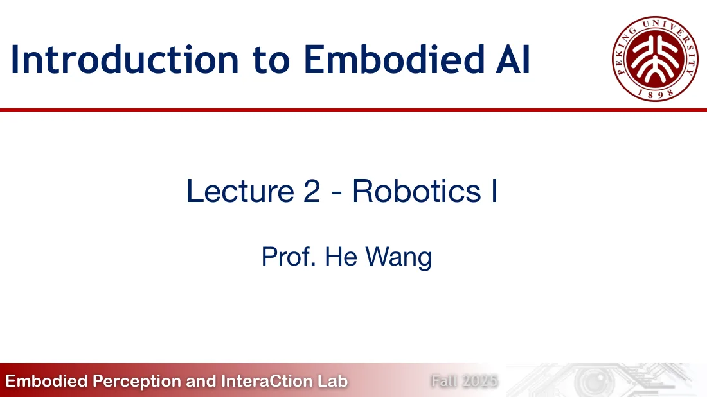
第2讲：机器人学 I
王鹤教授
北京大学（1898年）
具身感知与交互实验室（EPIC）
2025年秋季
Lecture 02 · PDF p2
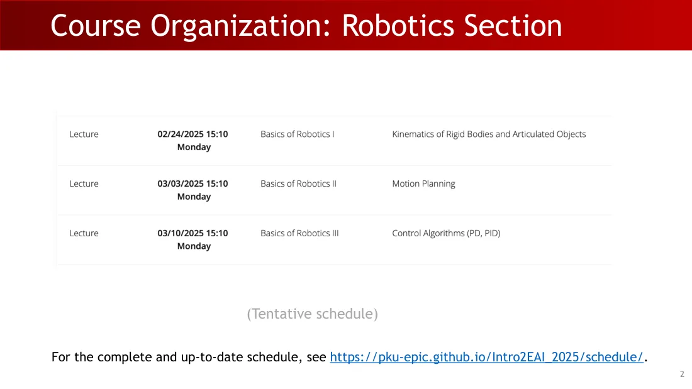
| 活动 | 日期与时间 | 主题 | 内容 |
|---|---|---|---|
| 授课 | 2025年2月24日 星期一15:10 | 机器人学基础 I | 刚体和关节物体的运动学 |
| 授课 | 2025年3月3日 星期一15:10 | 机器人学基础 II | 运动规划 |
| 授课 | 2025年3月10日 星期一15:10 | 机器人学基础 III | 控制算法（PD、PID） |
（暂定安排）
完整且最新的安排见 https://pku-epic.github.io/Intro2EAI_2025/schedule/。
Lecture 02 · PDF p3
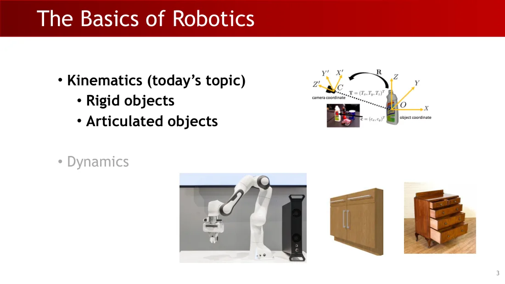
- 运动学（今天的主题）。
- 刚体。
- 关节物体。
- 动力学。
Lecture 02 · PDF p4
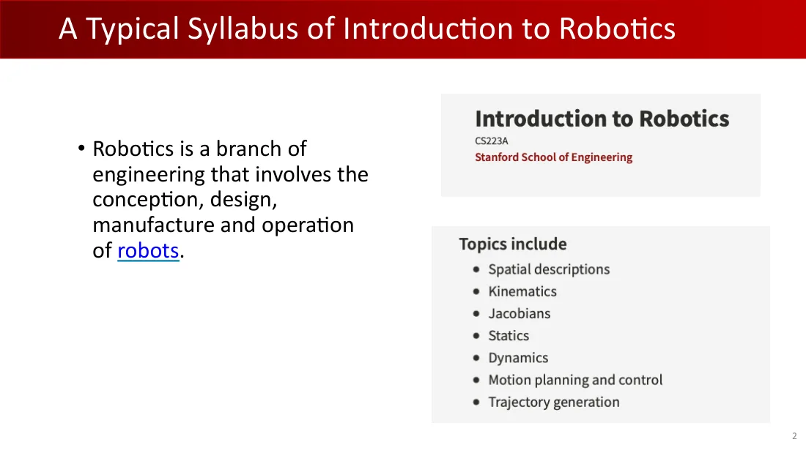
- 机器人学是工程学的一个分支，涉及机器人的构思、设计、制造和运行。
机器人学导论，CS223A，斯坦福大学工程学院。
内容包括：
- 空间描述。
- 运动学。
- 雅可比矩阵。
- 静力学。
- 动力学。
- 运动规划与控制。
- 轨迹生成。
Lecture 02 · PDF p5
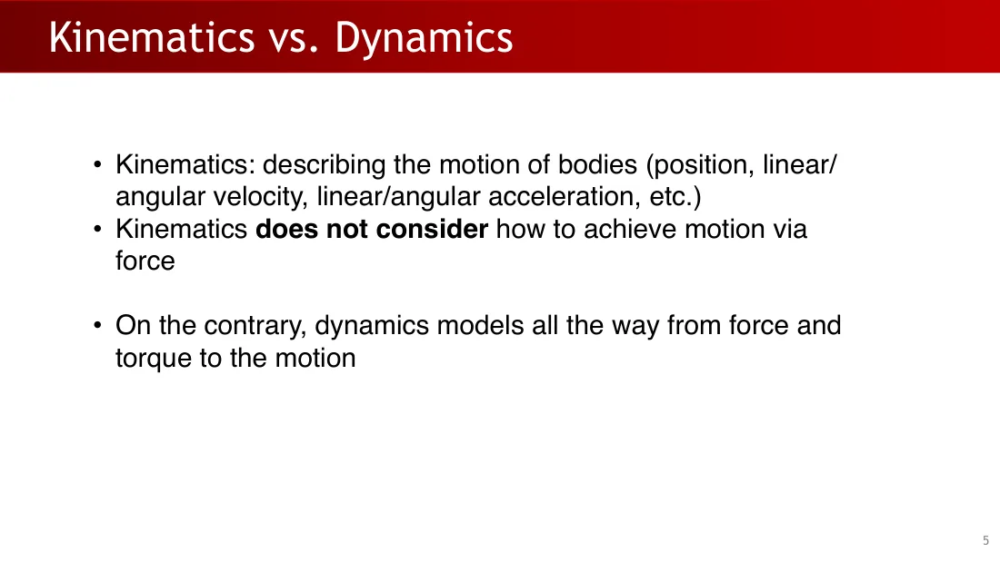
- 运动学：描述物体的运动（位置、线速度/角速度、线加速度/角加速度等）。
- 运动学不考虑如何通过力来实现运动。
- 与此相反，动力学建立从力和力矩到运动的完整模型。
Lecture 02 · PDF p6
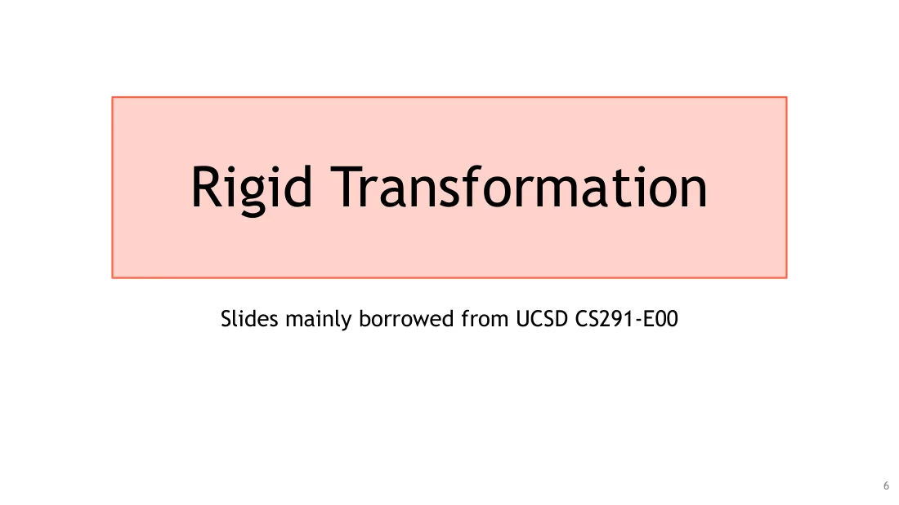
幻灯片主要借用自加州大学圣迭戈分校 UCSD CS291-E00。
Lecture 02 · PDF p7
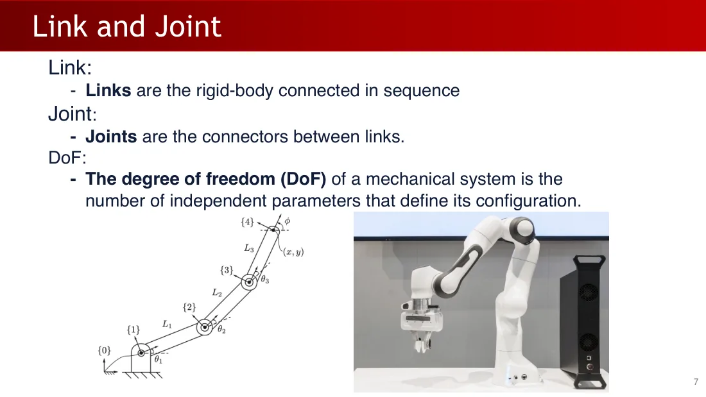
连杆：
- 连杆是按顺序连接的刚体。
关节：
- 关节是连杆之间的连接器。
自由度：
- 一个机械系统的自由度（DoF）是定义其配置所需的独立参数的数量。
Lecture 02 · PDF p8
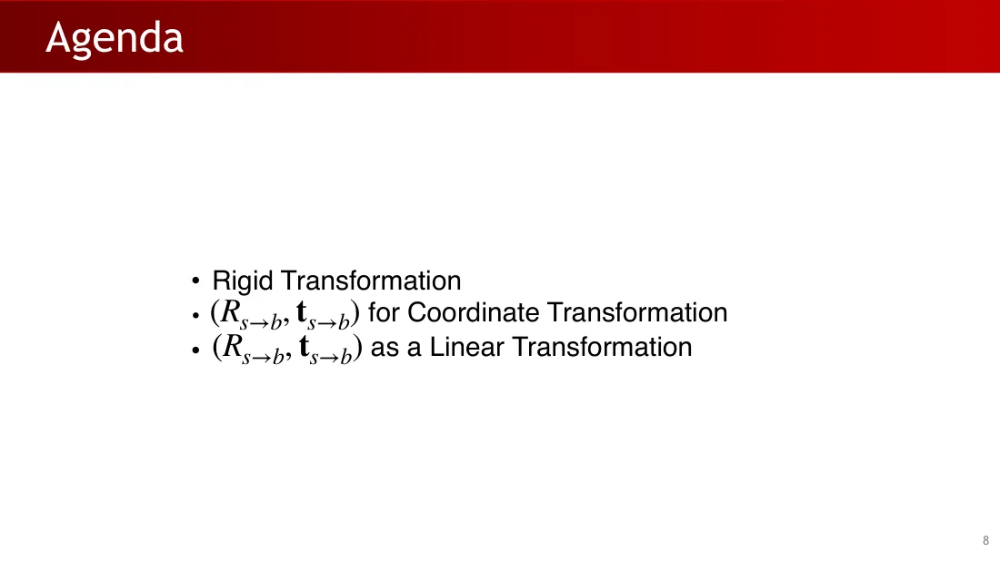
- 刚体变换。
- 用于坐标变换的 \((R_{s\to b}, t_{s\to b})\)。
- 将 \((R_{s\to b}, t_{s\to b})\) 表示为线性变换。
Lecture 02 · PDF p9
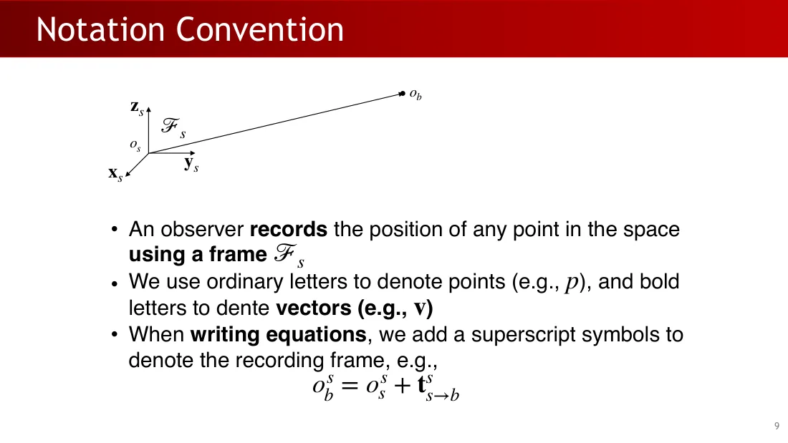
- 观察者使用坐标系 \(F_s\) 记录空间中任意点的位置。
- 使用普通字母表示点（例如 p），用粗体字母表示向量（例如 v）。
- 写方程时，用上标表示记录坐标的坐标系，例如 \(o_b^{s} = o_s^{s} + t_{s\to b}^{s}\)。
图中：\(F_s\)；原点 \(o_s\)、\(o_b\)；坐标轴 \(x_s\)、\(y_s\)、\(z_s\)。
Lecture 02 · PDF p10
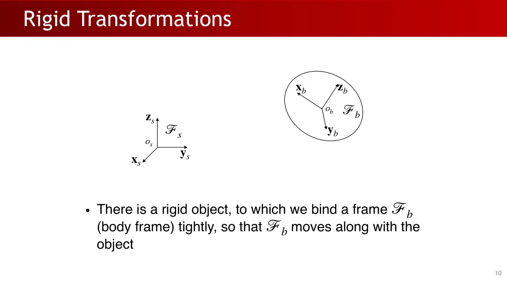
- 给定一个刚体，将坐标系 \(F_b\)（物体坐标系）与之牢固绑定，使 \(F_b\) 随物体一起移动。
图中：\(F_s\)、\(F_b\)；原点 \(o_s\)、\(o_b\)；坐标轴 \(x_s\)、\(y_s\)、\(z_s\) 与 \(x_b\)、\(y_b\)、\(z_b\)。
Lecture 02 · PDF p11
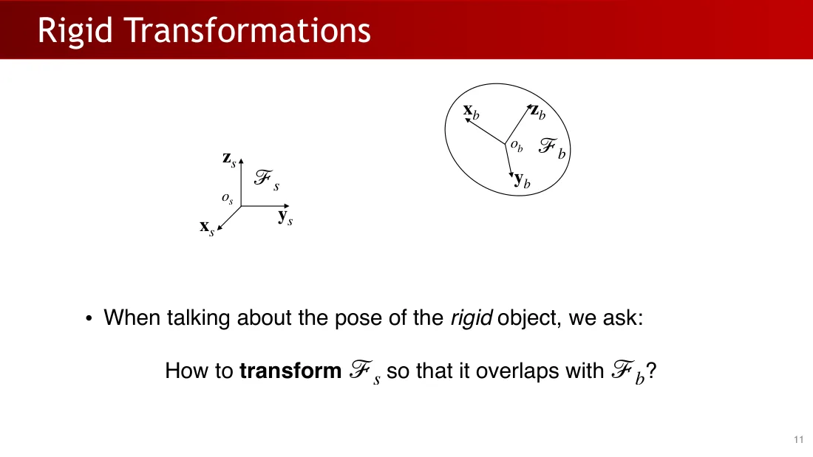
- 谈论刚体位姿时，我们问：
怎样变换 \(F_s\)，才能使它与 \(F_b\) 重合？
图中：\(F_s\)、\(F_b\)；原点 \(o_s\)、\(o_b\)；坐标轴 \(x_s\)、\(y_s\)、\(z_s\) 与 \(x_b\)、\(y_b\)、\(z_b\)。
Lecture 02 · PDF p12
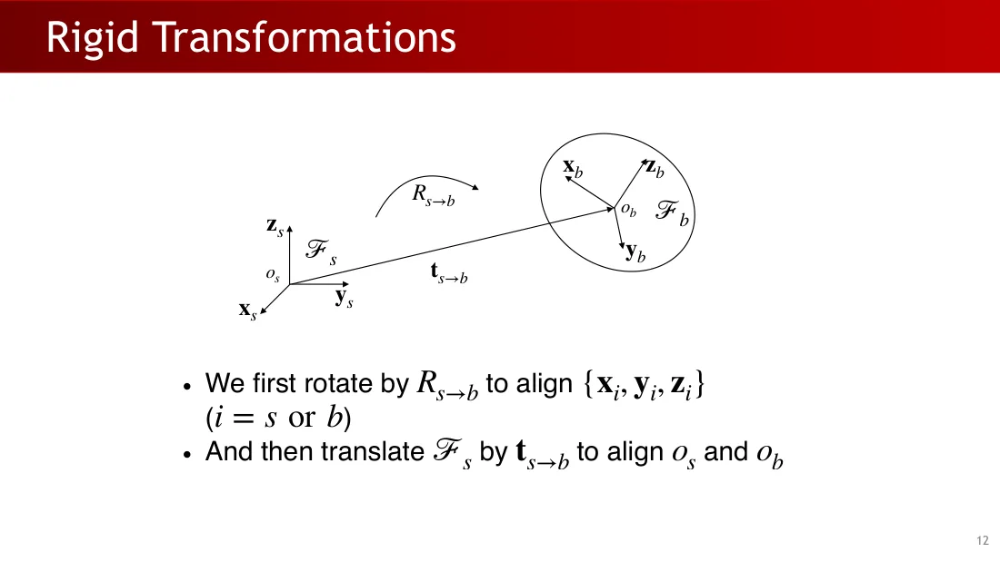
- 先用 \(R_{s\to b}\) 旋转，使各轴 \(\{x_i, y_i, z_i\}\) 对齐（\(i = s\) 或 b）。
- 再将 \(F_s\) 平移 \(t_{s\to b}\)，使 \(o_s\) 和 \(o_b\) 对齐。
Lecture 02 · PDF p13
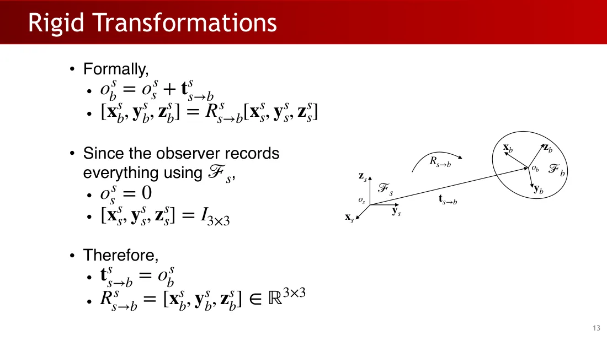
- 形式上，
- \[o_b^{s} = o_s^{s} + t_{s\to b}^{s}\]
- \[[x_b^{s}, y_b^{s}, z_b^{s}] = R_{s\to b}^{s}[x_s^{s}, y_s^{s}, z_s^{s}]\]
- 因为观察者使用 \(F_s\) 记录一切，
- \[o_s^{s} = 0\]
- \[[x_s^{s}, y_s^{s}, z_s^{s}] = I_{3\times 3}\]
- 因此，
- \[t_{s\to b}^{s} = o_b^{s}\]
- \[R_{s\to b}^{s} = [x_b^{s}, y_b^{s}, z_b^{s}] \in \mathbb{R}^{3\times 3}\]
Lecture 02 · PDF p14
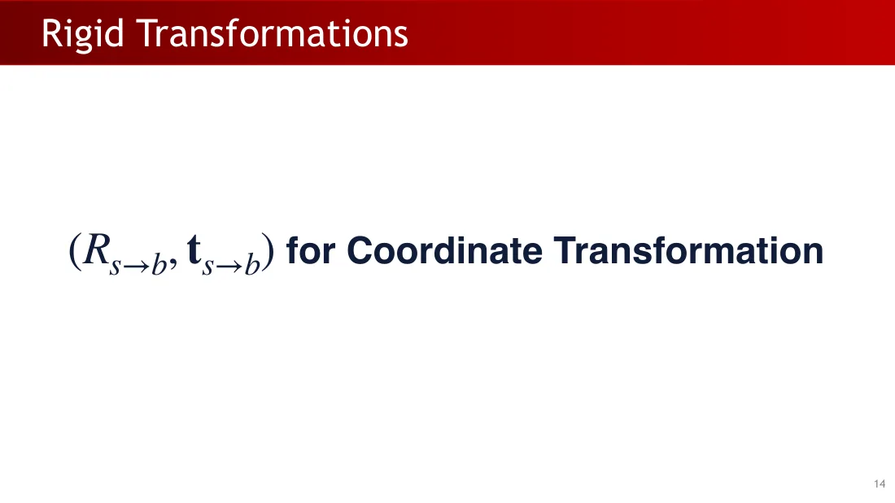
用于坐标变换的 \((R_{s\to b}, t_{s\to b})\)。
Lecture 02 · PDF p15
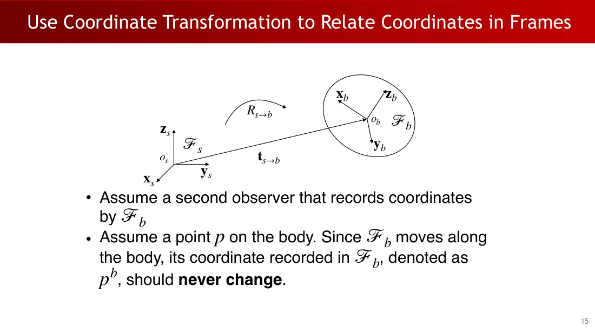
- 假设第二位观察者使用 \(F_b\) 记录坐标。
- 假设物体上有一点 p。由于 \(F_b\) 随物体移动，p 在 \(F_b\) 中记录的坐标（记为 \(p^{b}\)）应当始终不变。
Lecture 02 · PDF p16
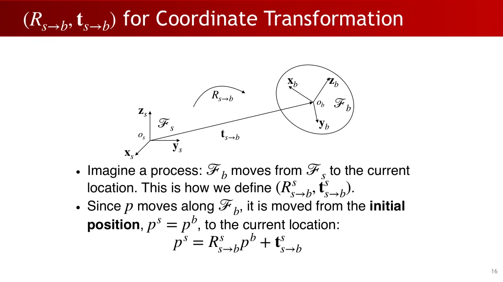
- 想象这样一个过程：\(F_b\) 从 \(F_s\) 移动到当前位置。我们以此定义 \((R_{s\to b}^{s}, t_{s\to b}^{s})\)。
- 因为 p 随 \(F_b\) 一起移动，它从初始位置 \(p^{s} = p^{b}\) 移动到当前位置：
\[p^{s} = R_{s\to b}^{s}p^{b} + t_{s\to b}^{s}\]
Lecture 02 · PDF p17
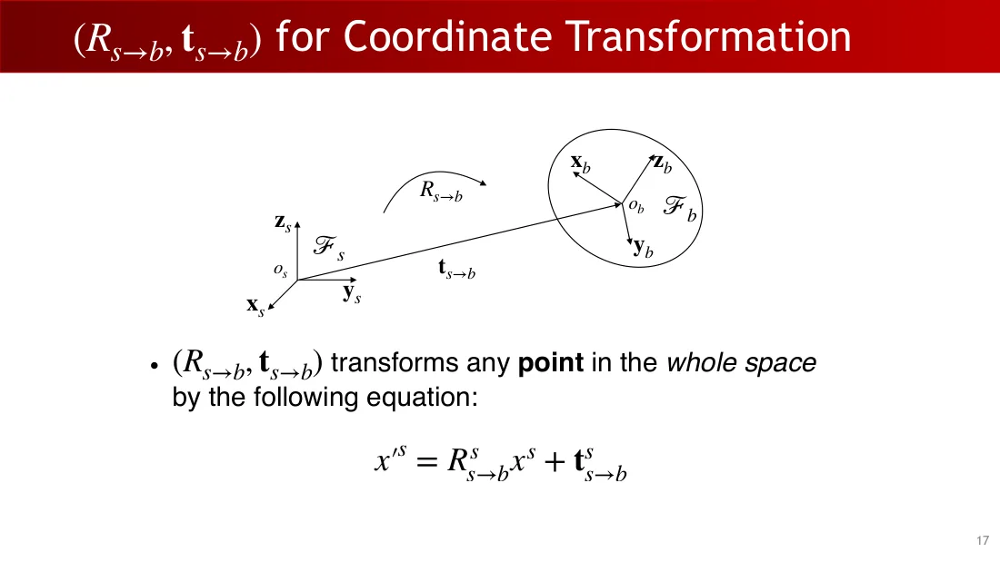
- \((R_{s\to b}, t_{s\to b})\) 通过下面的方程变换整个空间中的任意点：
\[x'^{s} = R_{s\to b}^{s}x^{s} + t_{s\to b}^{s}\]
Lecture 02 · PDF p18
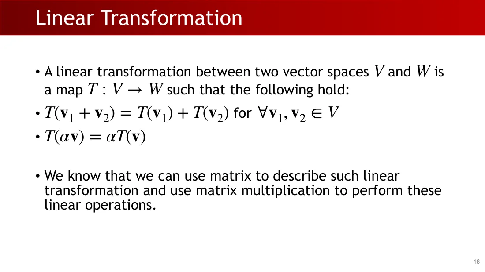
- 两个向量空间 V 与 W 之间的线性变换是满足下列条件的映射 T: V → W：
- 对所有 \(v_{1}, v_{2} \in V\text{，}T(v_{1} + v_{2}) = T(v_{1}) + T(v_{2})\)。
- \[T(\alpha v) = \alpha T(v)\]
- 我们知道，可以用矩阵描述这样的线性变换，并使用矩阵乘法执行这些线性运算。
Lecture 02 · PDF p19
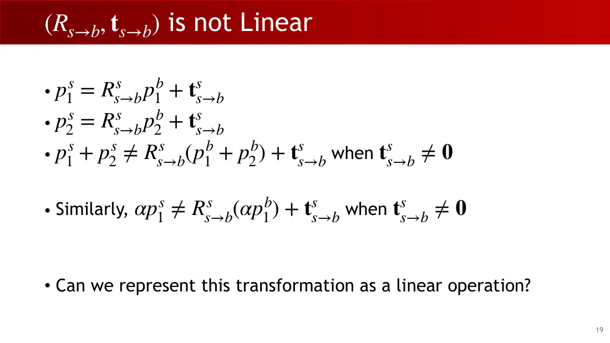
- \[p_{1}^{s} = R_{s\to b}^{s}p_{1}^{b} + t_{s\to b}^{s}\]
- \[p_{2}^{s} = R_{s\to b}^{s}p_{2}^{b} + t_{s\to b}^{s}\]
- 当 \(t_{s\to b}^{s} \ne 0\) 时，\(p_{1}^{s} + p_{2}^{s} \ne R_{s\to b}^{s}(p_{1}^{b} + p_{2}^{b}) + t_{s\to b}^{s}\)。
- 类似地，当 \(t_{s\to b}^{s} \ne 0\) 时，\(\alpha p_{1}^{s} \ne R_{s\to b}^{s}(\alpha p_{1}^{b}) + t_{s\to b}^{s}\)。
- 能将这个变换表示为线性运算吗？
Lecture 02 · PDF p20
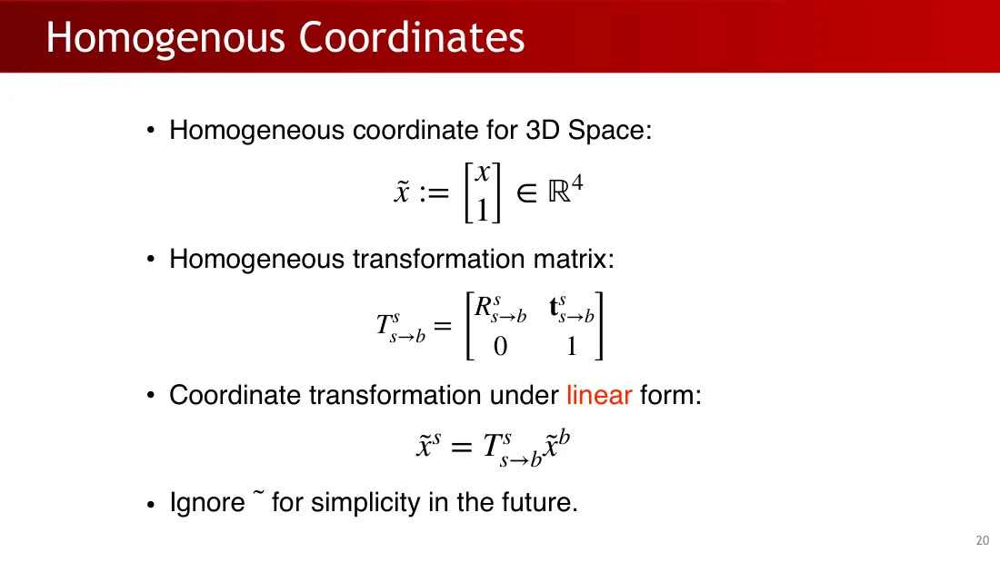
- 三维空间的齐次坐标：\(\tilde{x} := \begin{bmatrix}x \\ 1\end{bmatrix} \in \mathbb{R}^{4}\)。
- 齐次变换矩阵：\(T_{s\to b}^{s} = \begin{bmatrix}R_{s\to b}^{s} & t_{s\to b}^{s} \\ 0 & 1\end{bmatrix}\)。
- 线性形式的坐标变换：\(\tilde{x}^{s} = T_{s\to b}^{s}\tilde{x}^{b}\)。
- 后面为简洁起见省略符号“~”。
Lecture 02 · PDF p21
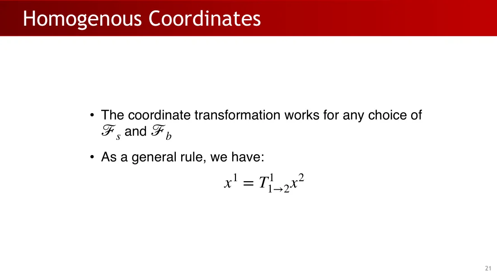
- 对任意选择的 \(F_s\) 和 \(F_b\)，坐标变换都成立。
- 一般规则为：\(x^{1} = T_{1\to 2}^{1}x^{2}\)。
Lecture 02 · PDF p22
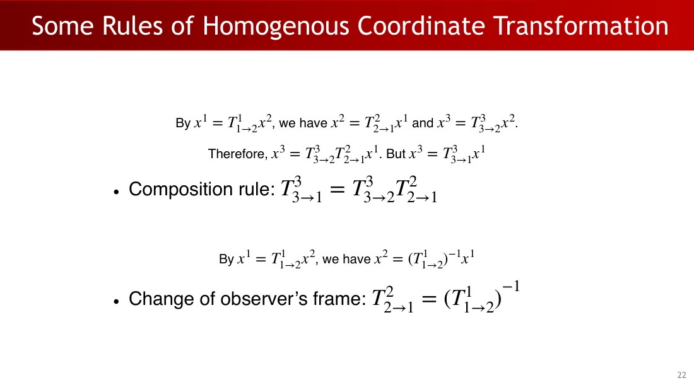
由 \(x^{1} = T_{1\to 2}^{1}x^{2}\)，得 \(x^{2} = T_{2\to 1}^{2}x^{1}\) 和 \(x^{3} = T_{3\to 2}^{3}x^{2}\)。
因此，\(x^{3} = T_{3\to 2}^{3}T_{2\to 1}^{2}x^{1}\)。但 \(x^{3} = T_{3\to 1}^{3}x^{1}\)。
- 复合规则：\(T_{3\to 1}^{3} = T_{3\to 2}^{3}T_{2\to 1}^{2}\)。
由 \(x^{1} = T_{1\to 2}^{1}x^{2}\)，得 \(x^{2} = (T_{1\to 2}^{1})^{-1}x^{1}\)。
- 改变观察者坐标系：\(T_{2\to 1}^{2} = (T_{1\to 2}^{1})^{-1}\)。
Lecture 02 · PDF p23
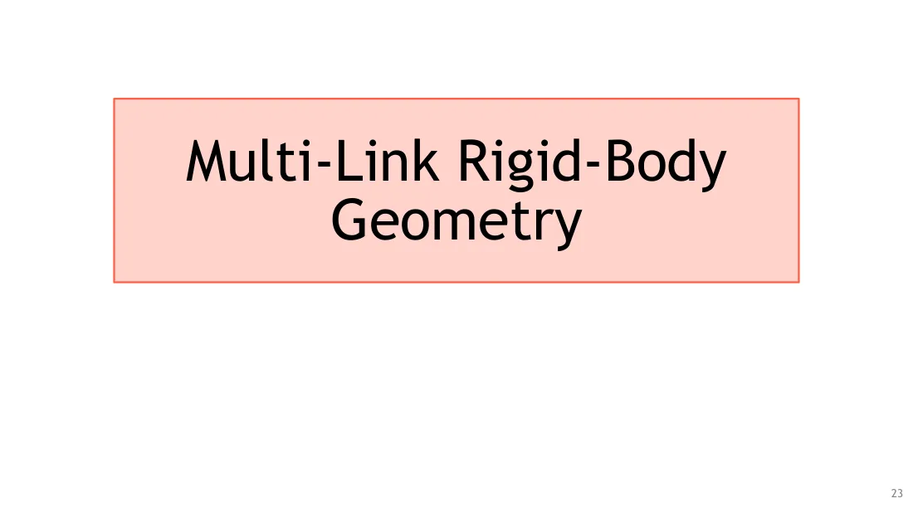
Lecture 02 · PDF p24
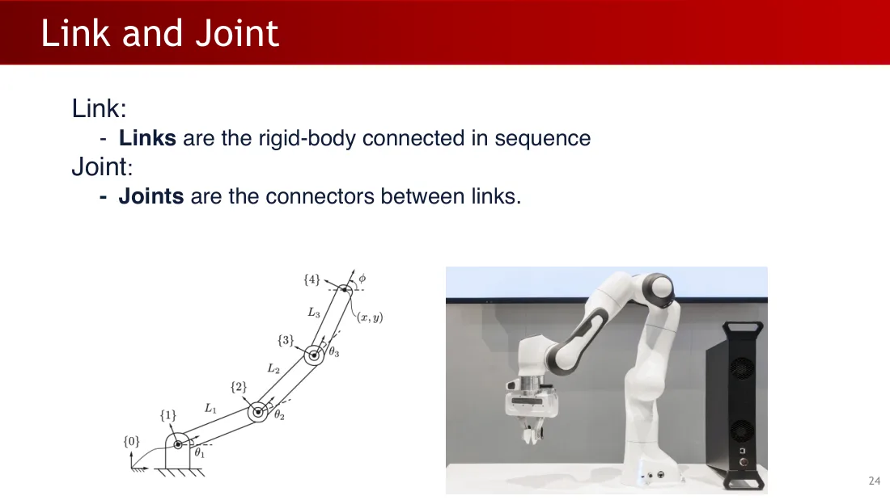
连杆：
- 连杆是按顺序连接的刚体。
关节：
- 关节是连杆之间的连接器。
Lecture 02 · PDF p25
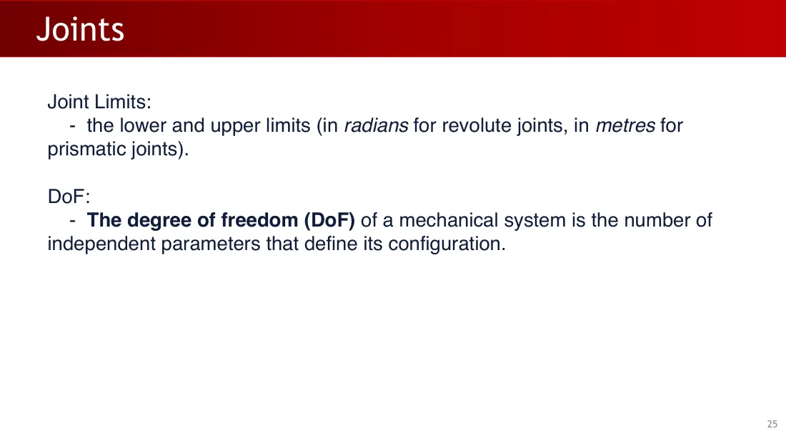
关节限位：
- 下限和上限（旋转关节用弧度，移动关节用米）。
自由度：
- 一个机械系统的自由度（DoF）是定义其配置所需的独立参数的数量。
Lecture 02 · PDF p26
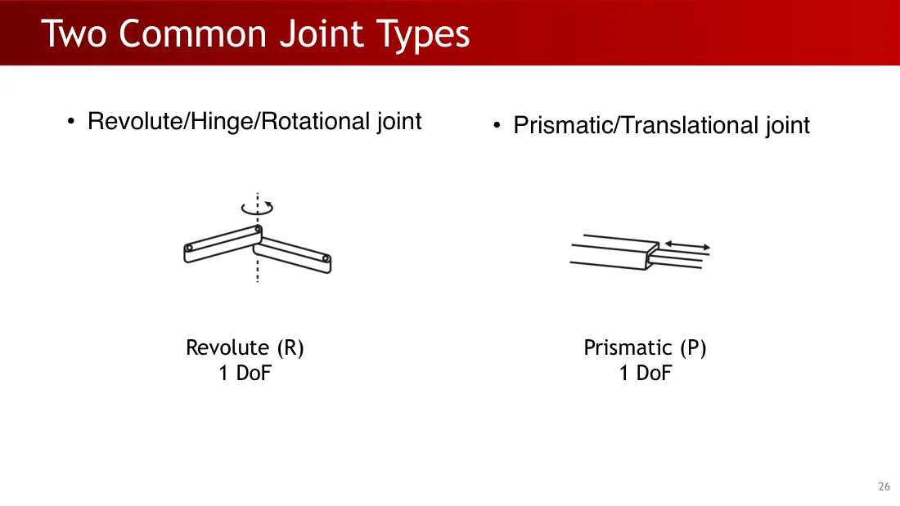
- 旋转关节/铰链关节/转动关节。
- 移动关节/平移关节。
旋转关节（R）：1个自由度。
移动关节（P）：1个自由度。
Lecture 02 · PDF p27
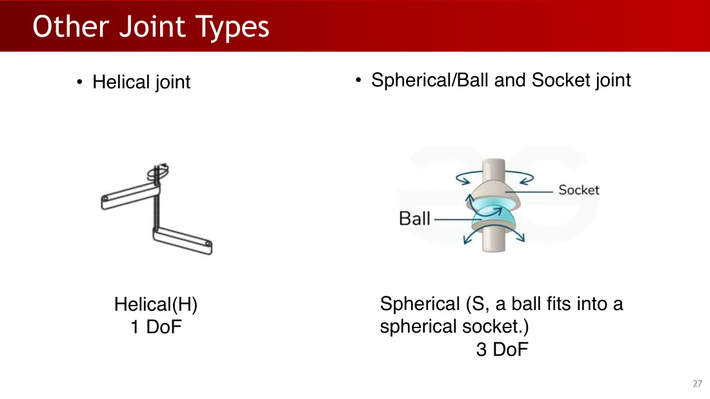
- 螺旋关节。
- 球面关节/球窝关节。
螺旋关节（H）：1个自由度。
球面关节（S，球体嵌入球形窝中）：3个自由度。
Lecture 02 · PDF p28
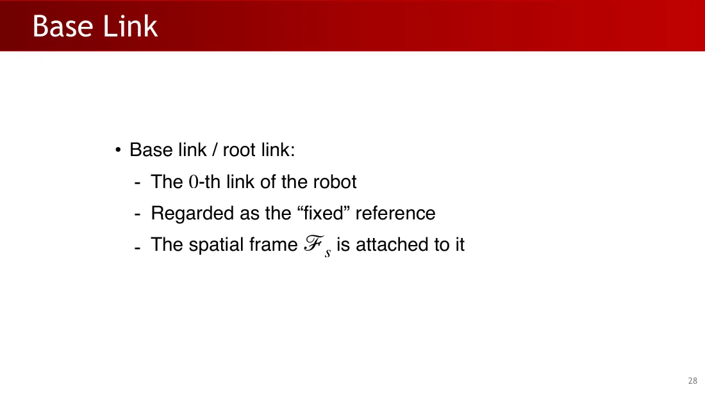
- 基座连杆/根连杆：
- 机器人的第0个连杆。
- 视为“固定”的参考。
- 空间坐标系 \(F_s\) 固定在其上。
Lecture 02 · PDF p29
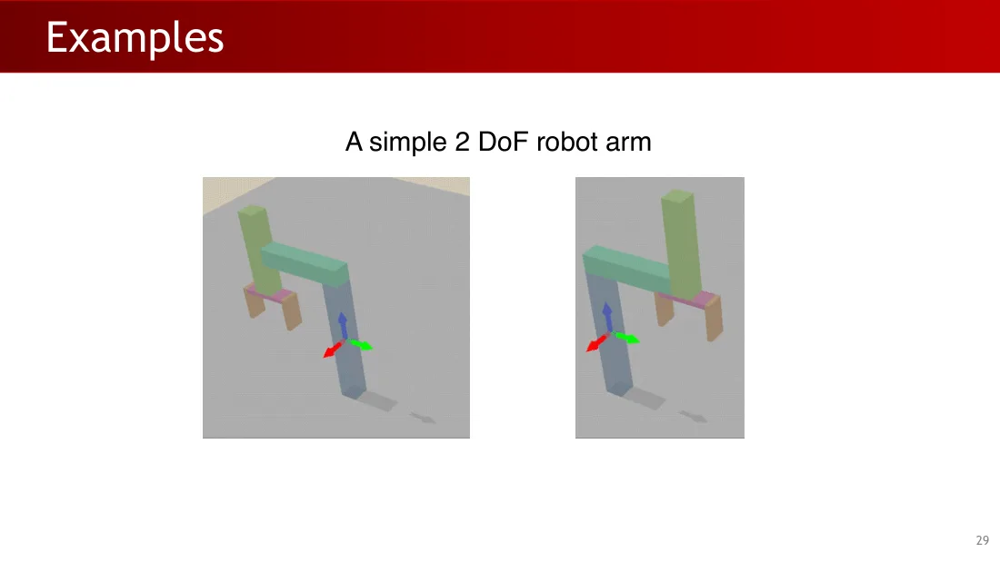
一个简单的2自由度机械臂。
Lecture 02 · PDF p30
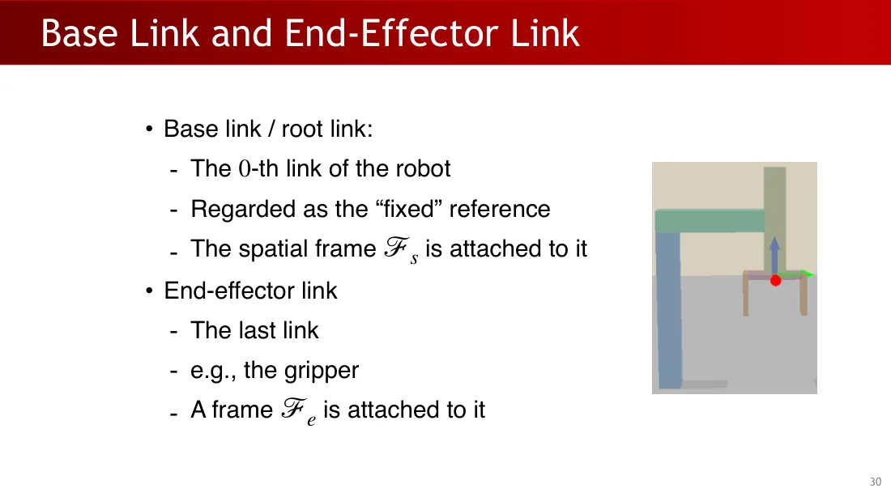
- 基座连杆/根连杆：
- 机器人的第0个连杆。
- 视为“固定”的参考。
- 空间坐标系 \(F_s\) 固定在其上。
- 末端执行器连杆：
- 最后一个连杆。
- 例如夹爪。
- 坐标系 \(F_e\) 固定在其上。
Lecture 02 · PDF p31
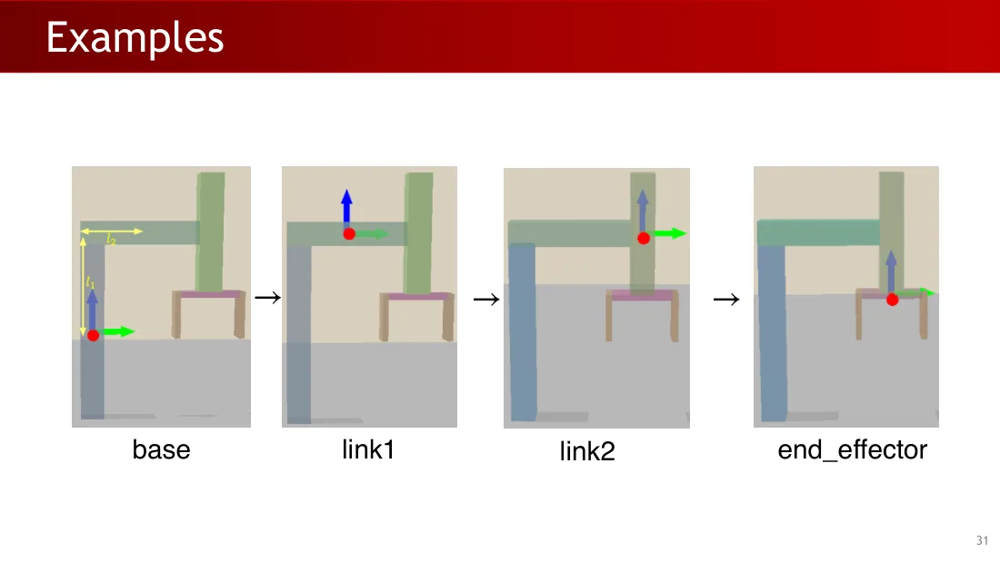
基座 → 连杆1 → 连杆2 → 末端执行器。
Lecture 02 · PDF p32
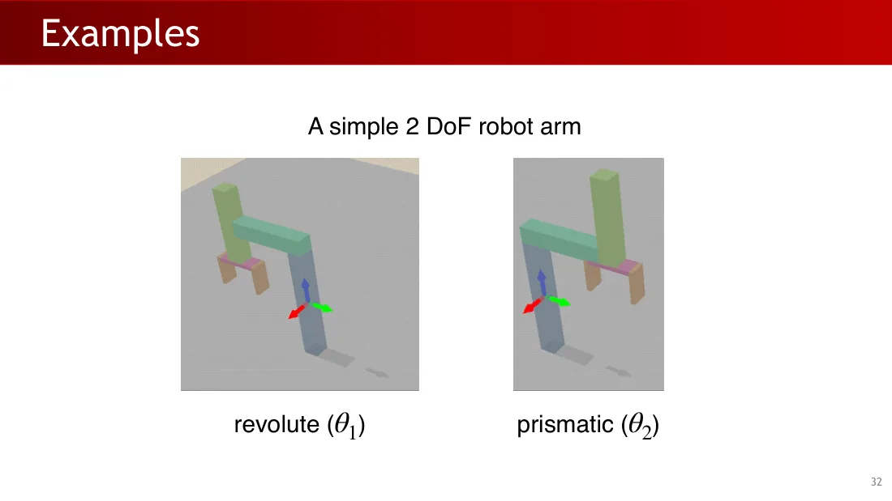
一个简单的2自由度机械臂。
旋转关节（\(\theta _{1}\)）；移动关节（\(\theta _{2}\)）。
Lecture 02 · PDF p33
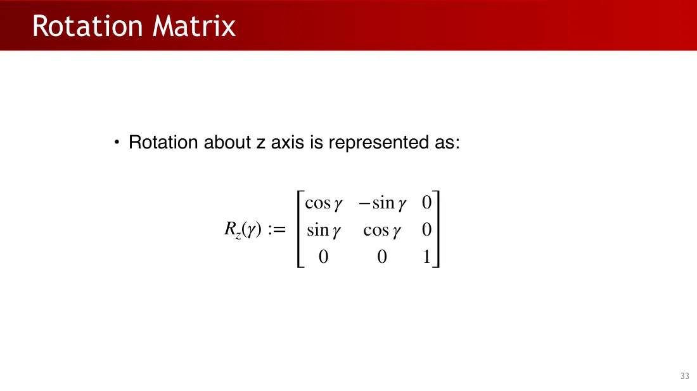
- 绕 z 轴的旋转表示为：
\[R_z(\gamma ) := \begin{bmatrix}\cos \gamma & -\sin \gamma & 0 \\ \sin \gamma & \cos \gamma & 0 \\ 0 & 0 & 1\end{bmatrix}\]
Lecture 02 · PDF p34
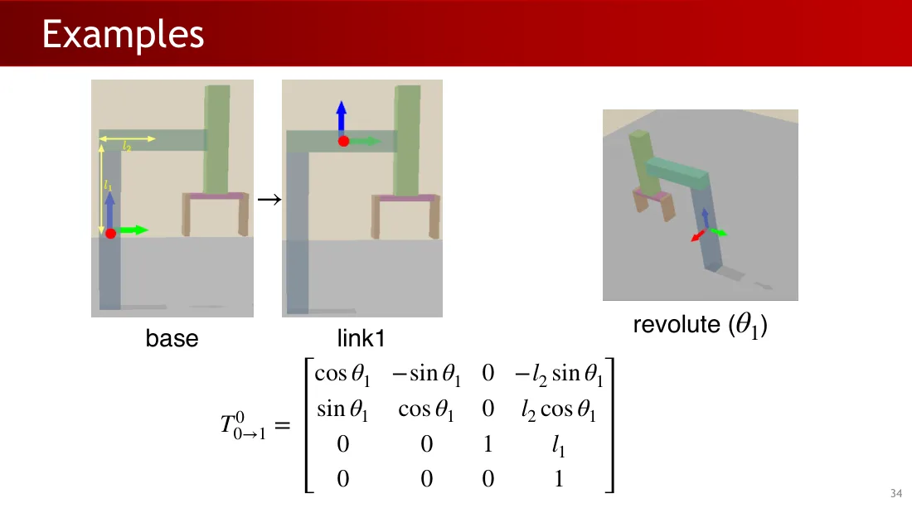
基座 → 连杆1；旋转关节（\(\theta _{1}\)）。
\[T_{0\to 1}^{0} = \begin{bmatrix}\cos \theta _{1} & -\sin \theta _{1} & 0 & -l_{2} \sin \theta _{1} \\ \sin \theta _{1} & \cos \theta _{1} & 0 & l_{2} \cos \theta _{1} \\ 0 & 0 & 1 & l_{1} \\ 0 & 0 & 0 & 1\end{bmatrix}\]
Lecture 02 · PDF p35
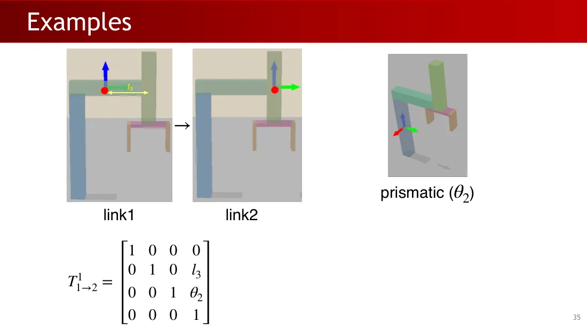
连杆1 → 连杆2；移动关节（\(\theta _{2}\)）。
\[T_{1\to 2}^{1} = \begin{bmatrix}1 & 0 & 0 & 0 \\ 0 & 1 & 0 & l_{3} \\ 0 & 0 & 1 & \theta _{2} \\ 0 & 0 & 0 & 1\end{bmatrix}\]
Lecture 02 · PDF p36
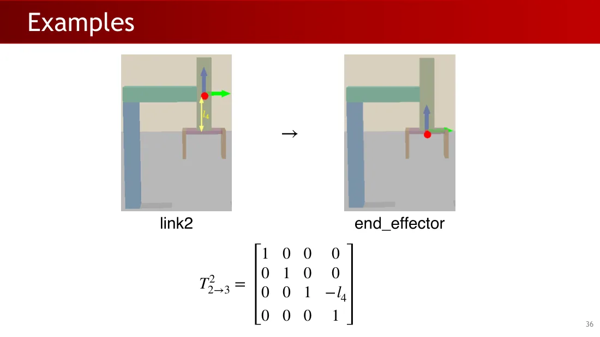
连杆2 → 末端执行器。
\[T_{2\to 3}^{2} = \begin{bmatrix}1 & 0 & 0 & 0 \\ 0 & 1 & 0 & 0 \\ 0 & 0 & 1 & -l_{4} \\ 0 & 0 & 0 & 1\end{bmatrix}\]
Lecture 02 · PDF p37
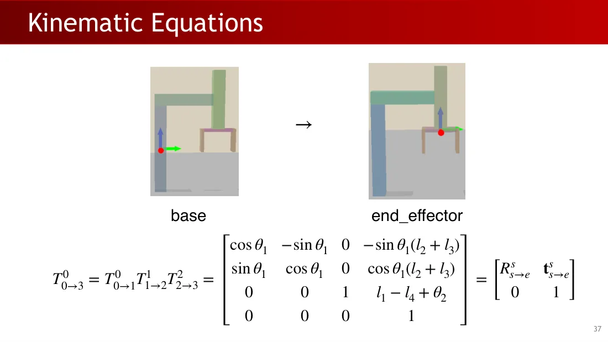
基座 → 末端执行器。
\[T_{0\to 3}^{0} = T_{0\to 1}^{0}T_{1\to 2}^{1}T_{2\to 3}^{2}\]
\[= \begin{bmatrix}\cos \theta _{1} & -\sin \theta _{1} & 0 & -\sin \theta _{1}(l_{2}+l_{3}) \\ \sin \theta _{1} & \cos \theta _{1} & 0 & \cos \theta _{1}(l_{2}+l_{3}) \\ 0 & 0 & 1 & l_{1}-l_{4}+\theta _{2} \\ 0 & 0 & 0 & 1\end{bmatrix}\]
\[= \begin{bmatrix}R_{s\to e}^{s} & t_{s\to e}^{s} \\ 0 & 1\end{bmatrix}\]
Lecture 02 · PDF p38
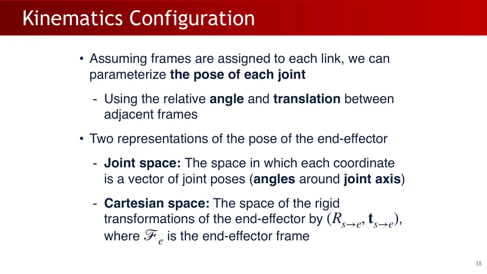
- 假设为每个连杆分配了坐标系，就能参数化每个关节的位姿。
- 使用相邻坐标系之间的相对角度和平移。
- 末端执行器位姿有两种表示：
- 关节空间：每个坐标都是关节位姿向量（绕关节轴的角度）的空间。
- 笛卡尔空间：末端执行器的刚体变换 \((R_{s\to e}, t_{s\to e})\) 所构成的空间，其中 \(F_e\) 是末端执行器坐标系。
Lecture 02 · PDF p39
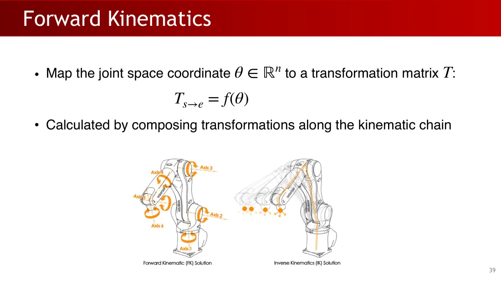
- 将关节空间坐标 \(\theta \in \mathbb{R}^{n}\) 映射到变换矩阵 T：\(T_{s\to e} = f(\theta )\)。
- 通过复合运动链上各个变换来计算。
图中：第1轴、第2轴、第3轴、第4轴、第5轴、第6轴；正向运动学（FK）解；逆向运动学（IK）解；KUKA。
Lecture 02 · PDF p40
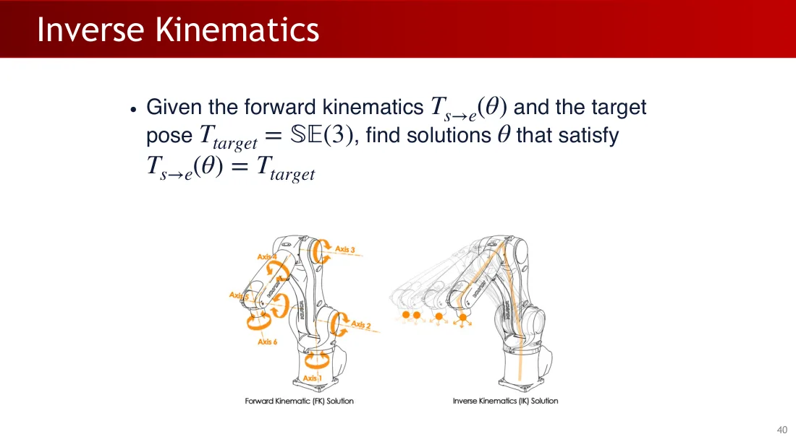
- 给定正向运动学 \(T_{s\to e}(\theta )\) 和目标位姿 \(T_{\mathrm{target}} = \mathrm{SE}(3)\)，寻找满足 \(T_{s\to e}(\theta ) = T_{\mathrm{target}}\) 的解 \(\theta\)。
图中：第1轴、第2轴、第3轴、第4轴、第5轴、第6轴；正向运动学（FK）解；逆向运动学（IK）解；KUKA。
Lecture 02 · PDF p41
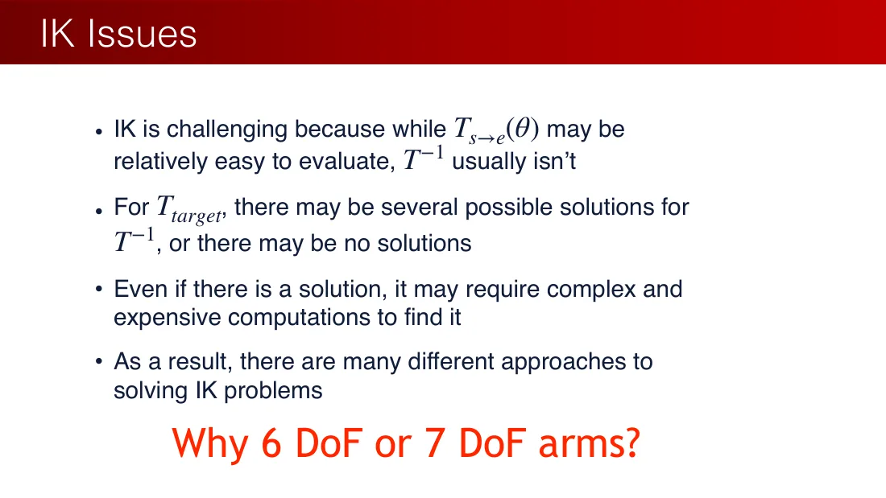
- 逆向运动学具有挑战性：\(T_{s\to e}(\theta )\) 的求值可能比较容易，但 \(T^{-1}\) 通常并不容易求。
- 对于 \(T_{\mathrm{target}}\text{，}T^{-1}\) 可能有多个解，也可能无解。
- 即使存在解，寻找它也可能需要复杂且代价高昂的计算。
- 因此，求解逆向运动学问题有许多不同的方法。
为什么使用6自由度或7自由度机械臂？
Lecture 02 · PDF p42
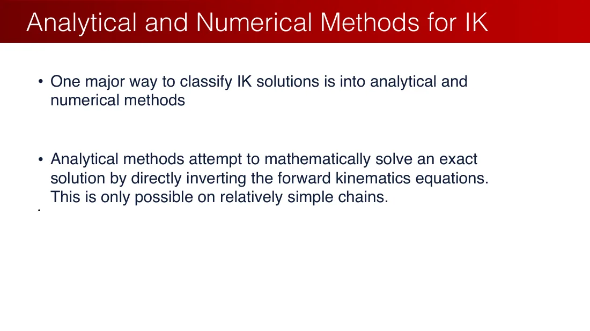
- 对逆向运动学解的一种主要分类，是分为解析方法与数值方法。
- 解析方法尝试直接反解正向运动学方程，从数学上求出精确解。这只对相对简单的运动链可行。
Lecture 02 · PDF p43
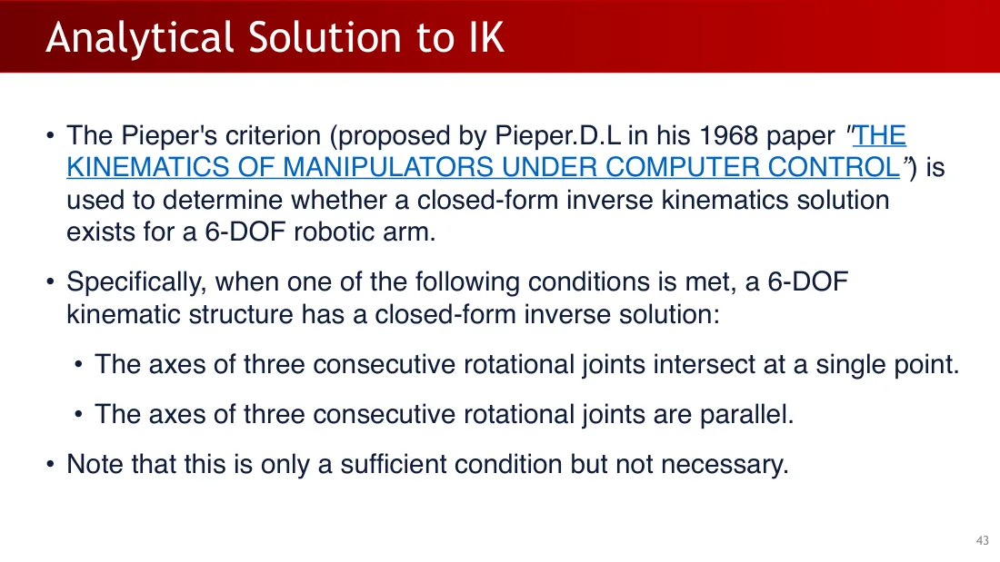
- Pieper 判据用于判断6自由度机械臂是否存在闭式逆向运动学解。
- 具体来说，满足以下任意一个条件时，6自由度运动学结构存在闭式逆解：
- 三个连续旋转关节的轴交于一点。
- 三个连续旋转关节的轴相互平行。
- 注意：这只是充分条件，不是必要条件。
Lecture 02 · PDF p44
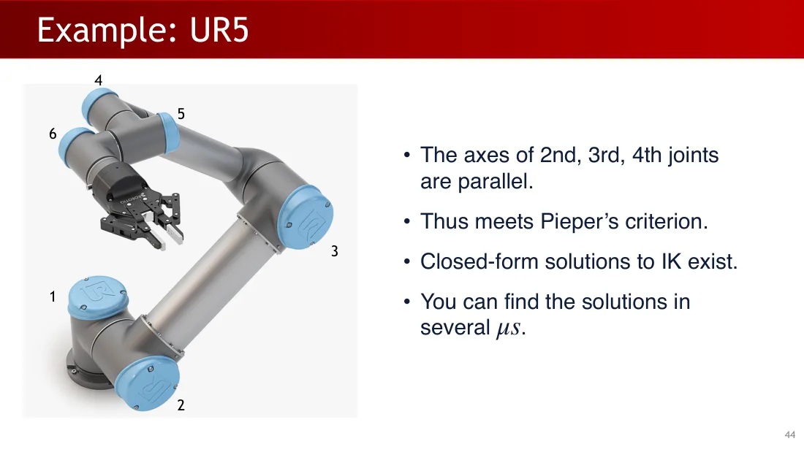
- 第2、3、4个关节的轴相互平行。
- 因此满足 Pieper 判据。
- 存在逆向运动学的闭式解。
- 可以在几微秒内找到解。
关节编号：1、2、3、4、5、6。
Lecture 02 · PDF p45
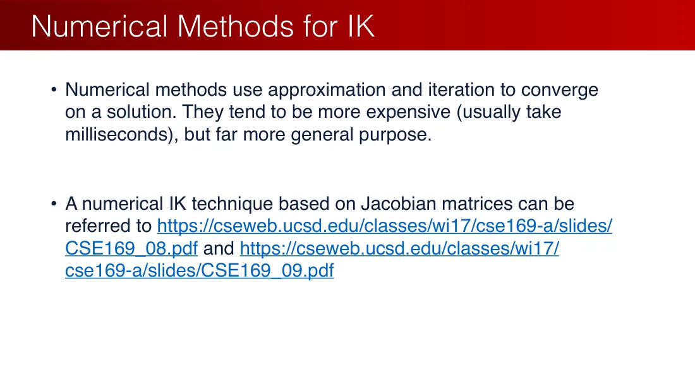
- 数值方法通过近似和迭代收敛到解。它们往往成本更高（通常需要毫秒量级时间），但通用性强得多。
- 关于基于雅可比矩阵的数值逆向运动学方法，可参考：
https://cseweb.ucsd.edu/classes/wi17/cse169-a/slides/CSE169_08.pdf
https://cseweb.ucsd.edu/classes/wi17/cse169-a/slides/CSE169_09.pdf
Lecture 02 · PDF p46
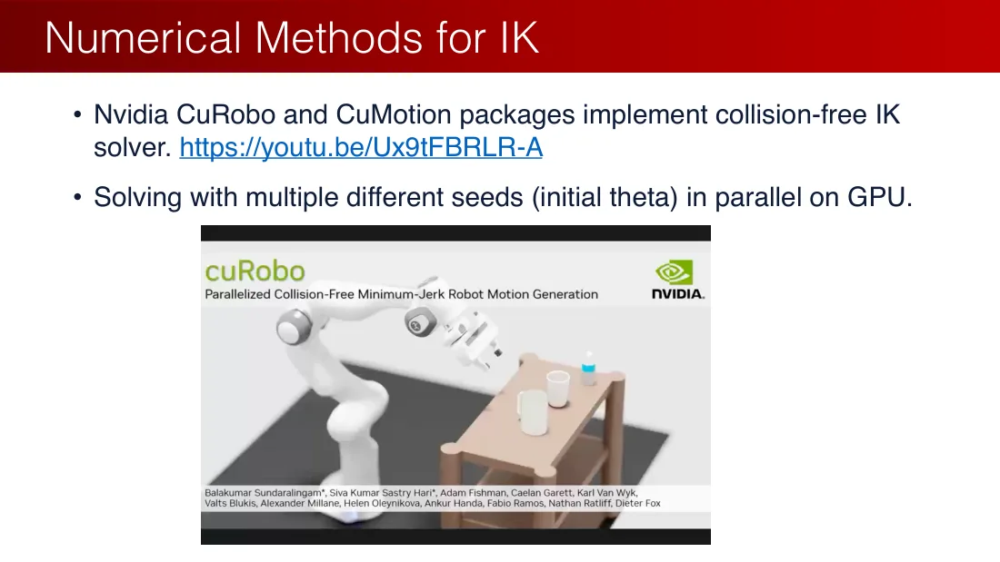
- NVIDIA 的 cuRobo 和 cuMotion 软件包实现了无碰撞逆向运动学求解器。https://youtu.be/Ux9tFBRLR-A
- 在 GPU 上使用多个不同种子（初始 \(\theta\)）并行求解。
cuRobo：并行化的无碰撞最小加加速度机器人运动生成。
NVIDIA。
Balakumar Sundaralingam*、Siva Kumar Sastry Hari*、Adam Fishman、Caelan Garrett、Karl Van Wyk、Valts Blukis、Alexander Millane、Helen Oleynikova、Ankur Handa、Fabio Ramos、Nathan Ratliff、Dieter Fox。
Lecture 02 · PDF p47
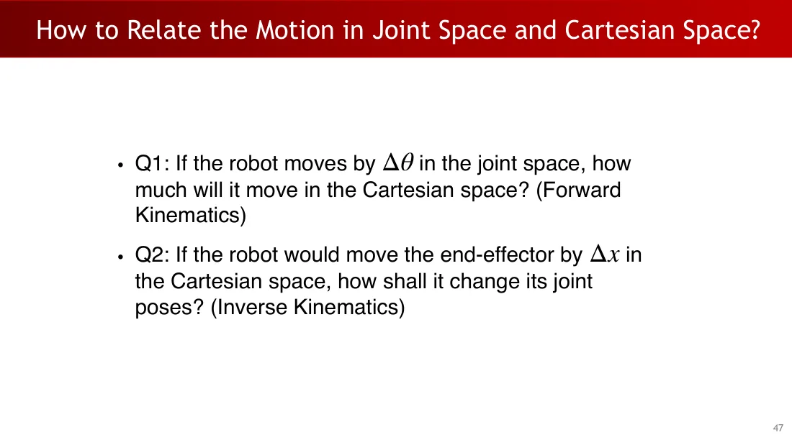
- 问题1：如果机器人在关节空间中移动 \(\Delta \theta\)，它在笛卡尔空间中会移动多少？（正向运动学）
- 问题2：如果机器人要让末端执行器在笛卡尔空间中移动 \(\Delta x\)，应如何改变关节位姿？（逆向运动学）
Lecture 02 · PDF p48
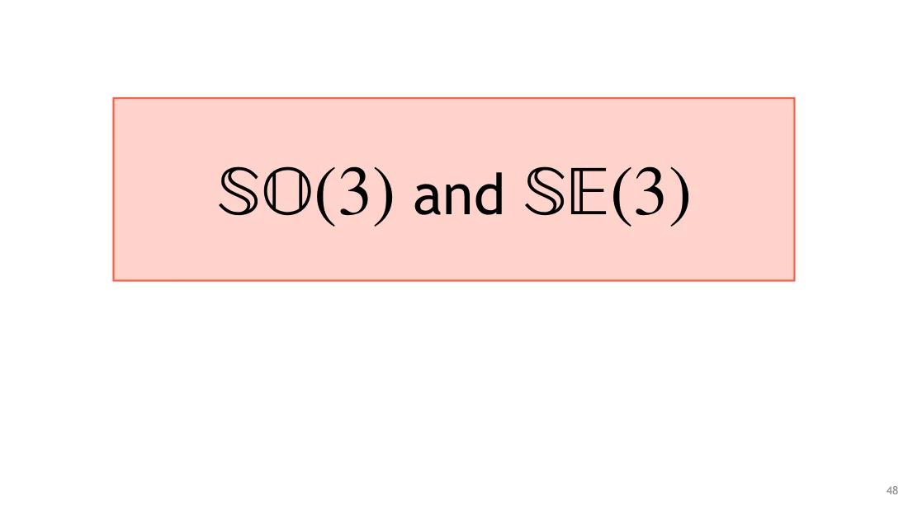
Lecture 02 · PDF p49
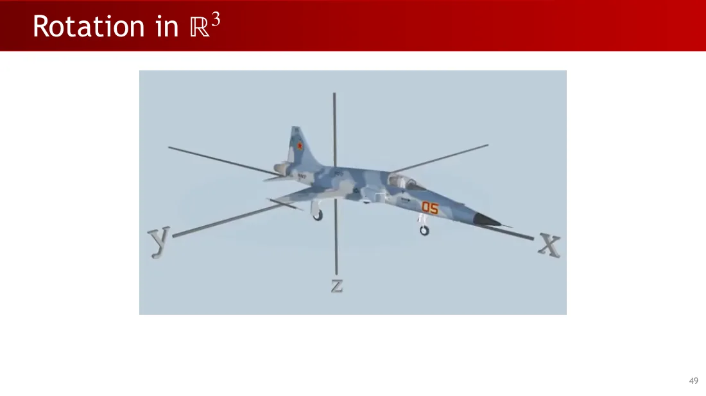
Lecture 02 · PDF p50
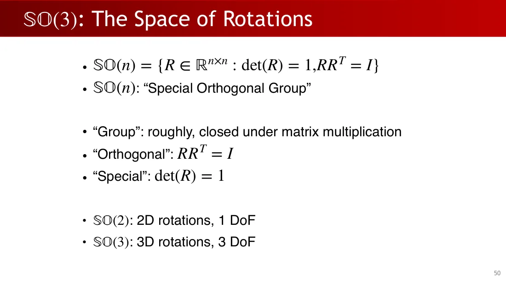
- \[\mathrm{SO}(n) = \{R \in \mathbb{R}^{n\times n} : \operatorname{det}(R) = 1\text{，}RR^{T} = I\}\]
- \(\mathrm{SO}(n)\)：“特殊正交群”。
- “群”：粗略地说，对矩阵乘法封闭。
- “正交”：\(RR^{T} = I\)。
- “特殊”：\(\operatorname{det}(R) = 1\)。
- \(\mathrm{SO}(2)\)：二维旋转，1个自由度。
- \(\mathrm{SO}(3)\)：三维旋转，3个自由度。
Lecture 02 · PDF p51
Lecture 02 · PDF p52
Lecture 02 · PDF p53
Lecture 02 · PDF p54
Lecture 02 · PDF p55
Lecture 02 · PDF p56
Lecture 02 · PDF p57
- 绕主轴的旋转表示为：
\[R_x(\alpha ) := \begin{bmatrix}1 & 0 & 0 \\ 0 & \cos \alpha & -\sin \alpha \\ 0 & \sin \alpha & \cos \alpha \end{bmatrix}\]
\[R_y(\beta ) := \begin{bmatrix}\cos \beta & 0 & \sin \beta \\ 0 & 1 & 0 \\ -\sin \beta & 0 & \cos \beta \end{bmatrix}\]
\[R_z(\gamma ) := \begin{bmatrix}\cos \gamma & -\sin \gamma & 0 \\ \sin \gamma & \cos \gamma & 0 \\ 0 & 0 & 1\end{bmatrix}\]
- 任意旋转可写为 \(R = R_z(\alpha )R_y(\beta )R_x(\gamma )\)。
Lecture 02 · PDF p58
Lecture 02 · PDF p59
- 例如，当 \(\beta = \frac{\pi}{2}\) 时，
\[R = R_z(\alpha )R_y(\frac{\pi}{2})R_x(\gamma )\]
\[= \begin{bmatrix}0 & 0 & 1 \\ \sin(\alpha +\gamma ) & \cos(\alpha +\gamma ) & 0 \\ -\cos(\alpha +\gamma ) & \sin(\alpha +\gamma ) & 0\end{bmatrix}\]
因为改变 \(\alpha\) 和 \(\gamma\) 会产生相同的效果，所以一个自由度消失了！
Lecture 02 · PDF p60
Lecture 02 · PDF p61

Lecture 02 · PDF p62
- 任意旋转都等价于绕一条固定轴 \(\hat{\omega } \in \mathbb{R}^{3}\)（\(\lVert \hat{\omega }\rVert = 1\)）转过正角度 \(\theta\)。
- \(\hat{\omega }\)：旋转轴的单位向量。
- \(\theta\)：旋转角度。
- \[R \in \mathrm{SO}(3) := \operatorname{Rot}(\hat{\omega }, \theta )\]
图中：\(\omega = \theta \hat{\omega }\)。
给定 \(\hat{\omega }\) 和 \(\theta\text{，}R \in \mathrm{SO}(3)\) 是什么？
Lecture 02 · PDF p63
Lecture 02 · PDF p64
- 可以证明，对任意 \(x \in \mathbb{R}^{3}\)，
\[\operatorname{Rot}(\hat{\omega }, \theta )x = x + (\sin \theta )\hat{\omega } \times x + (1 - \cos \theta )\hat{\omega } \times (\hat{\omega } \times x)\]
\[= \{I + [\hat{\omega }]\sin \theta + [\hat{\omega }]^{2}(1 - \cos \theta )\}x\]。（1）
Lecture 02 · PDF p65
- 可以证明，对任意 \(x \in \mathbb{R}^{3}\)，
\[\operatorname{Rot}(\hat{\omega }, \theta )x = x + (\sin \theta )\hat{\omega } \times x + (1 - \cos \theta )\hat{\omega } \times (\hat{\omega } \times x)\]
\[= \{I + [\hat{\omega }]\sin \theta + [\hat{\omega }]^{2}(1 - \cos \theta )\}x\]。（1）
- 利用 \(\sin\)、\(\cos\) 的泰勒展开、\([\hat{\omega }]^{3} = -[\hat{\omega }]\) 以及上式，
\[\operatorname{Rot}(\hat{\omega }, \theta )x = (I + \theta [\hat{\omega }] + (\frac{\theta ^{2}}{2!})[\hat{\omega }]^{2} + (\frac{\theta ^{3}}{3!})[\hat{\omega }]^{3} + \cdots)x\]
Lecture 02 · PDF p66
- 可以证明，对任意 \(x \in \mathbb{R}^{3}\)，
\[\operatorname{Rot}(\hat{\omega }, \theta )x = x + (\sin \theta )\hat{\omega } \times x + (1 - \cos \theta )\hat{\omega } \times (\hat{\omega } \times x)\]
\[= \{I + [\hat{\omega }]\sin \theta + [\hat{\omega }]^{2}(1 - \cos \theta )\}x\]。（1）
- 利用 \(\sin\)、\(\cos\) 的泰勒展开、\([\hat{\omega }]^{3} = -[\hat{\omega }]\) 以及上式，
\[\operatorname{Rot}(\hat{\omega }, \theta )x = (I + \theta [\hat{\omega }] + (\frac{\theta ^{2}}{2!})[\hat{\omega }]^{2} + (\frac{\theta ^{3}}{3!})[\hat{\omega }]^{3} + \cdots)x\]
- 回顾指数函数的泰勒展开：\(e^{x} = 1 + x + \frac{x^{2}}{2!} + \frac{x^{3}}{3!} + \cdots\)。
Lecture 02 · PDF p67
- 可以证明，对任意 \(x \in \mathbb{R}^{3}\)，
\[\operatorname{Rot}(\hat{\omega }, \theta )x = x + (\sin \theta )\hat{\omega } \times x + (1 - \cos \theta )\hat{\omega } \times (\hat{\omega } \times x)\]
\[= \{I + [\hat{\omega }]\sin \theta + [\hat{\omega }]^{2}(1 - \cos \theta )\}x\]。（1）
- 利用 \(\sin\)、\(\cos\) 的泰勒展开、\([\hat{\omega }]^{3} = -[\hat{\omega }]\) 以及上式，
\[\operatorname{Rot}(\hat{\omega }, \theta )x = (I + \theta [\hat{\omega }] + (\frac{\theta ^{2}}{2!})[\hat{\omega }]^{2} + (\frac{\theta ^{3}}{3!})[\hat{\omega }]^{3} + \cdots)x\]
- 回顾指数函数的泰勒展开：\(e^{x} = 1 + x + \frac{x^{2}}{2!} + \frac{x^{3}}{3!} + \cdots\)。
- 形式上，有 \(\operatorname{Rot}(\hat{\omega }, \theta )x = \exp(\theta [\hat{\omega }]) x\)，对所有 \(x \in \mathbb{R}^{3}\)。
Lecture 02 · PDF p68
- 由 \(\operatorname{Rot}(\hat{\omega }, \theta )x = \exp(\theta [\hat{\omega }]) x\)，对所有 \(x \in \mathbb{R}^{3}\)，得 \(\operatorname{Rot}(\hat{\omega }, \theta ) \equiv \exp(\theta [\hat{\omega }])\)。
- 这里采用如下矩阵指数定义：
\[\exp(\theta [\hat{\omega }]) = I + \theta [\hat{\omega }] + (\frac{\theta ^{2}}{2!})[\hat{\omega }]^{2} + (\frac{\theta ^{3}}{3!})[\hat{\omega }]^{3} + \cdots\]
- 根据上一张幻灯片的式(1)，得到 Rodrigues 公式：
\[\exp(\theta [\hat{\omega }]) = I + [\hat{\omega }]\sin \theta + [\hat{\omega }]^{2}(1 - \cos \theta )\]
Lecture 02 · PDF p69
Lecture 02 · PDF p70
- 矩阵指数的定义：
\[\exp(\theta [\hat{\omega }]) = I + \theta [\hat{\omega }] + (\frac{\theta ^{2}}{2!})[\hat{\omega }]^{2} + (\frac{\theta ^{3}}{3!})[\hat{\omega }]^{3} + \cdots\]
- 无穷级数求和？Rodrigues 公式。
- 可以证明 \([\hat{\omega }]^{3} = -[\hat{\omega }]\)。
- 再使用 \(\sin\) 和 \(\cos\) 的泰勒展开。
- \[\exp(\theta [\hat{\omega }]) = I + [\hat{\omega }]\sin \theta + [\hat{\omega }]^{2}(1 - \cos \theta )\]
Lecture 02 · PDF p71
- 第一个问题：存在唯一的参数化吗？
- 不存在：
1. \((\hat{\omega }, \theta )\) 与 \((-\hat{\omega }, -\theta )\) 给出相同的旋转。
2. 当 \(R = I\) 时，\(\theta = 0\text{，}\hat{\omega }\) 可以任取。
3. \((\hat{\omega }, \pi )\) 与 \((-\hat{\omega }, \pi )\) 给出相同的旋转（\(\operatorname{tr}(R) = -1\)）。
- 如果限定 \(\theta \in (0, \pi )\)，则存在唯一的参数化：
- \[\theta = \arccos(\frac{\operatorname{tr}(R)-1}{2})\text{，}[\hat{\omega }] = \frac{R-R^{T}}{2\sin \theta }\]
Lecture 02 · PDF p72
- 如何度量旋转 \((R_{1}, R_{2})\) 之间的距离？
- 一种自然的观点，是度量将刚体从 \(R_{1}\) 位姿旋转到 \(R_{2}\) 位姿所需的（最小）努力：
因为 \((R_{2}R_{1}^{T})R_{1} = R_{2}\)，
所以 \(\operatorname{dist}(R_{1}, R_{2}) = \theta (R_{2}R_{1}^{T}) = \arccos(\frac{\operatorname{tr}(R_{2}R_{1}^{T})-1}{2})\)。
图中坐标轴：X、Y、Z；两个朝向：\(R_{1}\)、\(R_{2}\)。
Lecture 02 · PDF p73